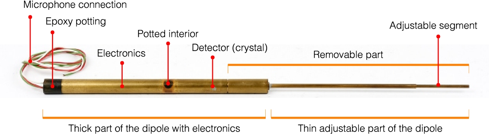

La limite d’une OSE :
On peut considérer trois catégories de dispositifs d’écoute (audio, vidéo, data) : CAT A, B, C
Catégorie A :
Les dispositifs professionnels sont difficilement détectables. Ils peuvent, dans certains cas, être installés dès la construction d’un immeuble (dans les murs !).
Ils utilisent des modes de transmission propriétaires (hyperfréquence, laser) et cryptés. Ils sont miniaturisés à l’extrême, d’où une forte probabilité de ne pas être détectés ni visibles s’ils sont bien dissimulés.
Heureusement, cette catégorie de matériel n’est pas facilement accessible au grand public. (CIA – 1958)
fig. 04 – source : Crypto Museum.
